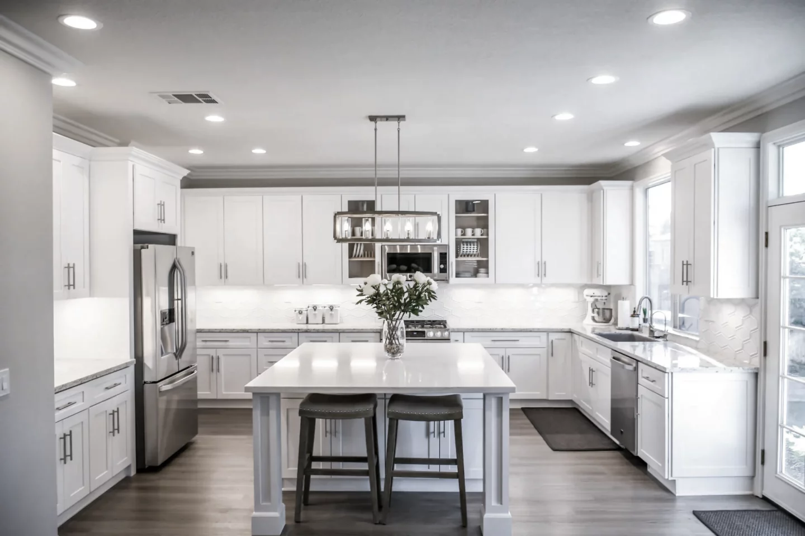

Décrivez votre problème : en 30 secondes, on vous dit s'il se règle avec un guide gratuit — ou s'il faut un pro. Et si c'est réparable vous-même, on vous le dit honnêtement.
Chaque seconde compte. Voici le réflexe à avoir avant même d'appeler le plombier.
Deux clics. Zéro courriel demandé. Une réponse franche : guide gratuit ou appel à un pro.
Ventouse, siphon, furet : la méthode complète pour venir à bout de 90 % des bouchons, sans rien dissoudre d'autre que le problème.
Lire le guide → 🚨Le plan d'action minute par minute pour limiter les dégâts, protéger vos biens et savoir quand appeler à l'aide.
Lire le guide → 🥶-30 °C et vos tuyaux? Isolation, robinets extérieurs, absences prolongées : le guide de survie hivernal de votre plomberie.
Lire le guide →Respirez. Faites ces trois gestes pour stopper les dégâts — puis appelez : un vrai plombier répond, jour et nuit, 365 jours par année.

InfoPlomberie.ca, c'est le projet de GCI — Groupe Constructions Intégrées, une équipe d'entrepreneurs et de plombiers installée sur le boulevard Provencher, à Saint-Léonard. On rénove des cuisines, des salles de bain et des sous-sols partout à Montréal — et on passe nos journées les mains dans la tuyauterie.
Ce site existe parce qu'on répond aux mêmes questions au téléphone depuis des années. Alors on a tout écrit. Si le guide règle votre problème : tant mieux, c'était le but. Sinon, vous savez où nous trouver.
« Nous ne bâtissons pas seulement des structures, nous établissons des relations fondées sur la confiance, la qualité et le savoir-faire. »
— L'équipe GCI, Saint-Léonard« Très beau travail ! Une équipe professionnelle, fiable et très respectueuse. Le souci du détail, la qualité des finitions et le respect des délais sont vraiment impressionnants. »
« Nous avons fait appel à GCI pour plusieurs rénovations de logements locatifs, et ils ne nous ont jamais déçus. »
« I used this company for 2 separate renovations, they were able to produce on time both times and I dealt with Artour the GC who was super professional and efficient. »
Google Avis publiés par de vrais clients de GCI sur notre fiche Google — venez lire les autres (ou ajouter le vôtre).